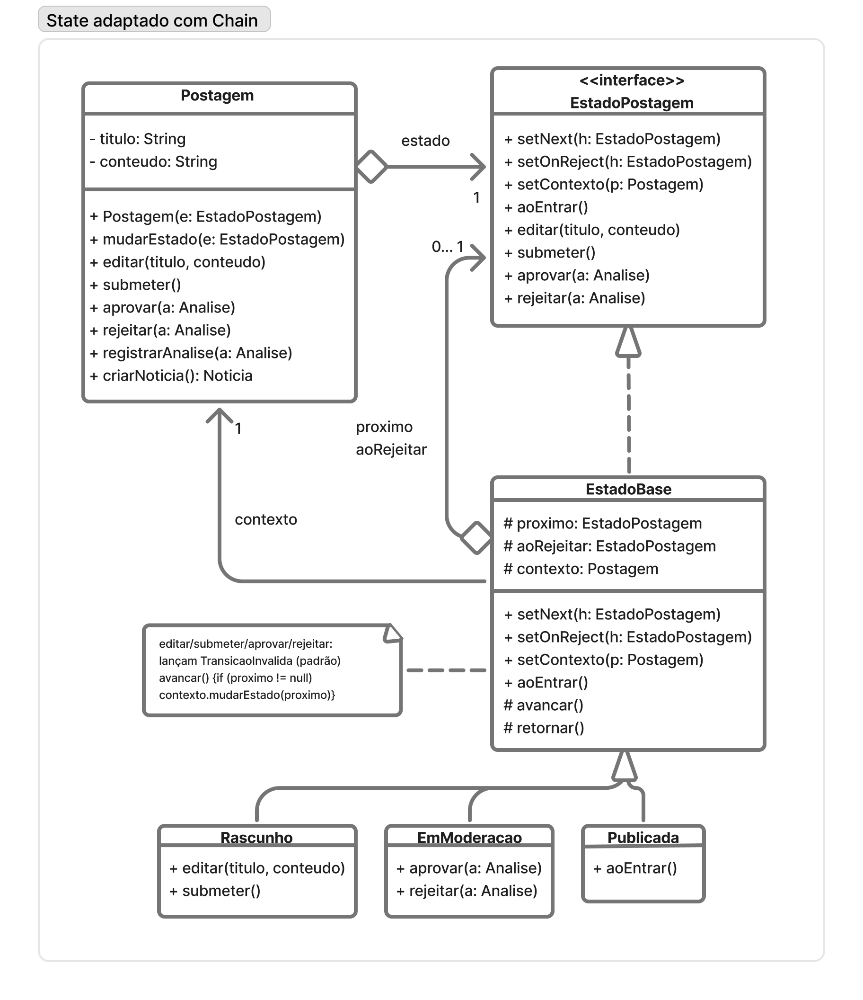
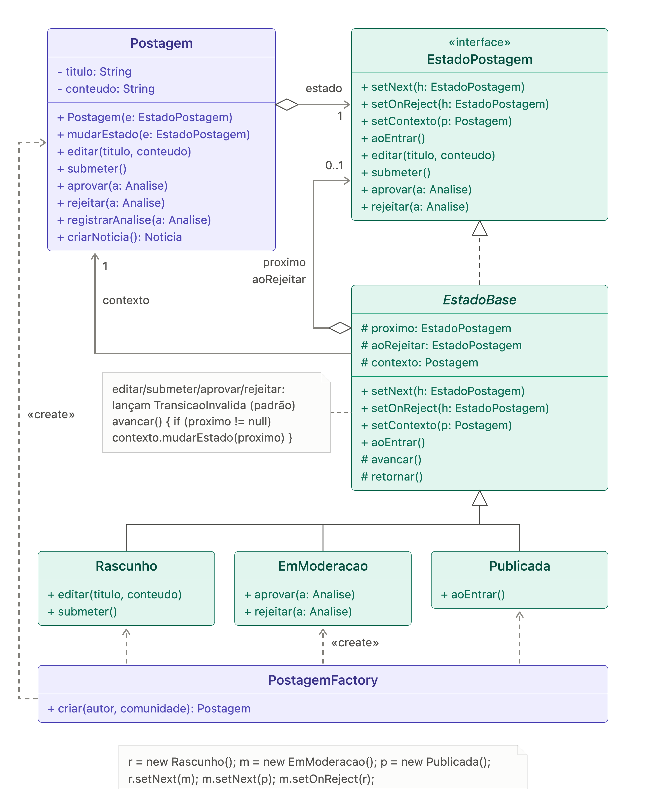
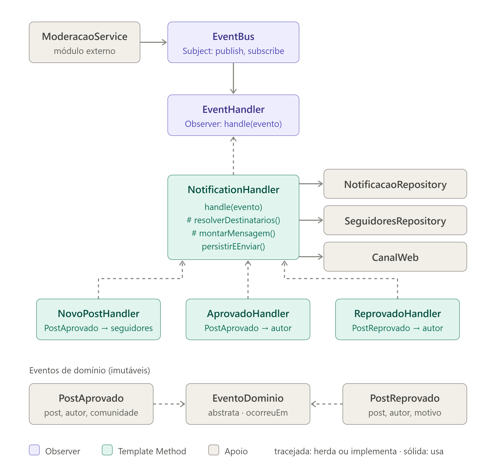
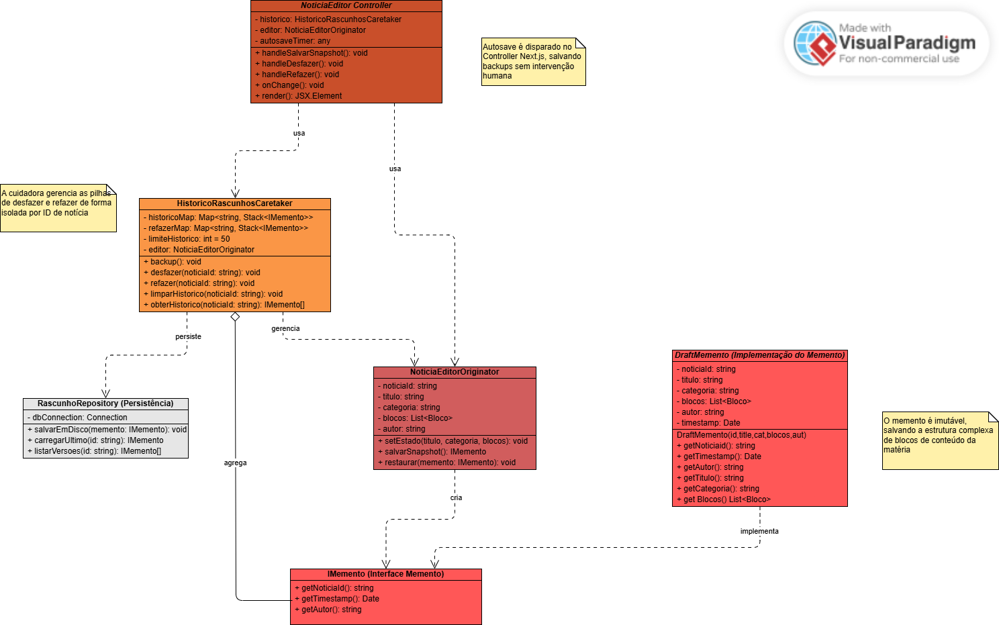
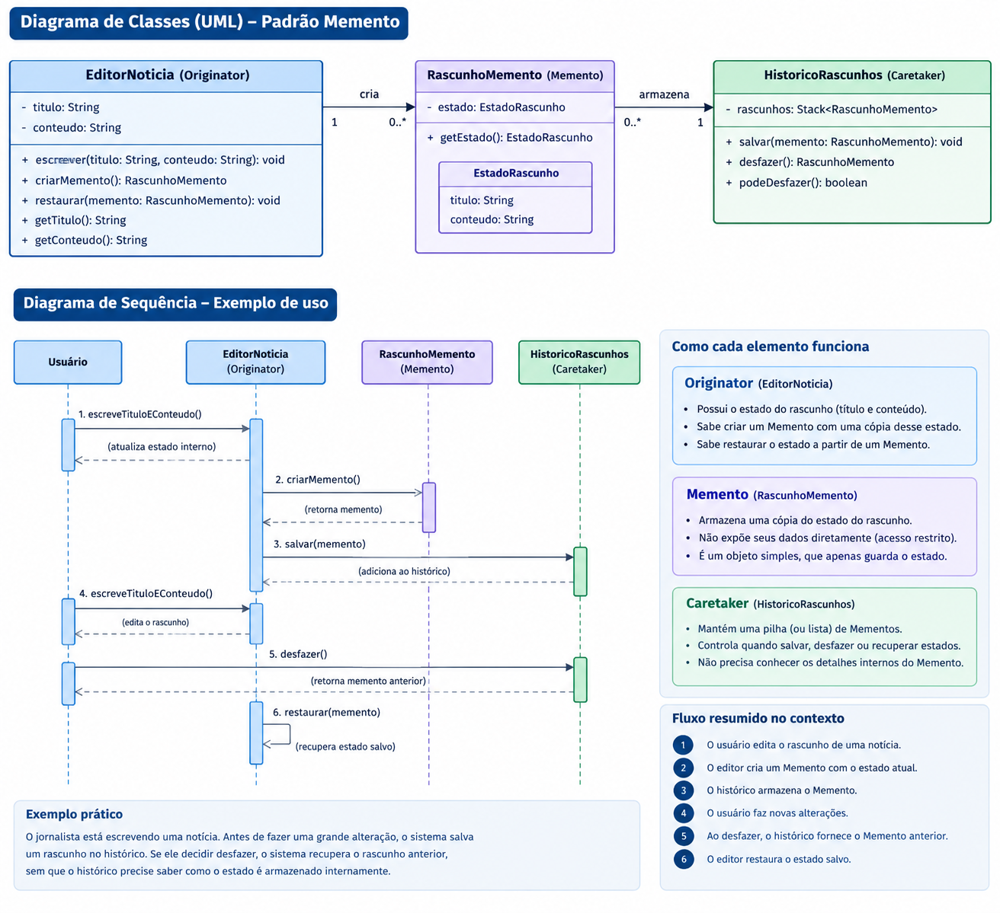
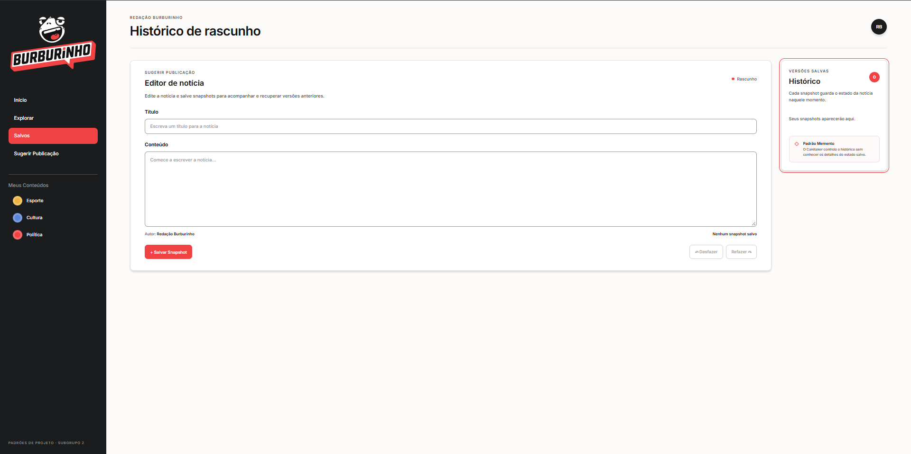

SubEquipe_02
O relatório contém a estrutura de foco definida para a Entrega 3, além de participantes, metodologia, modelagem, implementação, versionamentos e referências.
Foco do Relatório
FOCO_01: GoFs Comportamentais e IA Generativa
Entrega: três padrões comportamentais aplicados a problemas reais do Portal de Notícias Burburinho, com modelagem UML, código e vídeo demonstrando cada padrão em execução. O foco também registra as lições aprendidas e o ponto de vista crítico de cada integrante sobre o uso de IA generativa.
O subgrupo não tratará os três padrões como uma única solução. Cada integrante será responsável por um padrão principal, por um cenário específico e por evidências individuais. A integração ocorrerá no relatório e na revisão coletiva, preservando a separação das responsabilidades.
Participantes no Foco_01
| Nome do Membro | Padrão e lições aprendidas | Uso da IA Generativa (SENSO CRÍTICO) |
|---|---|---|
| Luís Felipe Parreira Cunha | State combinado com Chain of Responsibility: o State representa a etapa do ciclo de publicação; a Chain encaminha validações e responsabilidades específicas de cada etapa. A combinação reduz condicionais concentradas no fluxo principal, mas exige deixar claro que se trata de uma adaptação, e não de um novo padrão GoF. | Eu utilizei a IA generativa para discutir alternativas de aplicação do State combinado com Chain of Responsibility e gerar um primeiro rascunho da UML. Não tratei esse resultado como solução final: revisei os participantes, as transições e as responsabilidades, descartei elementos incompatíveis com o Burburinho (como o PostagemFactory) e alinhei o diagrama ao código implementado. |
| Matheus Eiki Kimura | Observer combinado com Template Method: o EventBus atua como sujeito e publica eventos de domínio sem conhecer seus consumidores. Os handlers inscritos atuam como observadores: recebem eventos de novos posts, aprovações e reprovações e encaminham as notificações aos destinatários adequados. A classe abstrata NotificationHandler define o fluxo comum de resolução dos destinatários, montagem da mensagem, persistência e envio, enquanto cada handler concreto especializa as etapas que variam. A implementação também permite inscrição e remoção de observadores, evita notificações duplicadas e mantém os demais handlers funcionando quando um deles falha. |
A IA foi utilizada como apoio à pesquisa, à modelagem e à revisão da solução. A proposta inicial foi confrontada com o código e com o fluxo real de moderação: foram ajustados os papéis de sujeito e observador, incluída a combinação com Template Method e descartadas simplificações que não representavam a implementação. A validação foi feita com testes de aprovação e reprovação, entrega em tempo real, remoção de duplicidades e isolamento de falhas entre handlers. |
| Pedro Henrique Ferreira Xavier | Ao implementar o Memento, aprendi a separar a criação/restauração do estado do editor da responsabilidade de manter o histórico. O DraftMemento guarda uma cópia do estado, o NoticiaEditorOriginator cria e restaura snapshots, e o HistoricoRascunhosCaretaker controla as pilhas de desfazer e refazer sem manipular o conteúdo interno do snapshot. Também compreendi que, ao salvar uma nova versão depois de desfazer, o histórico de refazer precisa ser descartado para não oferecer uma sequência inconsistente. |
Usei IA generativa como apoio para estruturar e implementar a demonstração. Ela acelerou a organização inicial das classes e da interface, mas o resultado precisou ser conferido contra os papéis do padrão e o fluxo real de salvar, desfazer e refazer. A IA não substitui essa validação: o modelo, a implementação JavaScript e a versão tipada em TypeScript precisam representar a mesma regra, e a demonstração continua sendo um protótipo em memória, não um mecanismo de persistência de produção. |
Metodologia do Foco_01
O trabalho será realizado em ciclos:
- Levantamento: revisar os artefatos da Entrega 2 e escolher um problema real para cada padrão.
- Modelagem individual: cada integrante produz uma primeira versão UML, identificando participantes, responsabilidades e relações do padrão.
- Implementação individual: cada integrante implementa o padrão no código do projeto ou em um exemplo executável rastreável ao domínio do Burburinho.
- Revisão coletiva: o subgrupo compara UML e código, verifica se o padrão está realmente presente e corrige responsabilidades, nomes e dependências.
- Validação: cada integrante executa os cenários principais e registra testes ou um roteiro reproduzível.
- Demonstração: cada integrante grava um vídeo curto mostrando o padrão funcionando.
- Consolidação: Luís revisa a integração documental; Eiki confere links e evidências do Observer; Pedro confere a consistência entre UML, código e vídeo do Memento.
As reuniões, decisões, revisões e eventuais alterações devem ser registradas em atas, vídeos ou commits. A IA generativa será apoio para pesquisa, comparação, geração de rascunhos e revisão, mas nenhuma sugestão será considerada evidência final sem análise humana e execução.
Rastros metodológicos:
- Atas ou vídeos das reuniões: Ata da reunião geral do Grupo de 08/10 · gravação da reunião no YouTube
- Discussões e decisões sobre os padrões: discussão sobre State + Chain of Responsibility no Claude · discussão sobre Memento no ChatGPT
GoF Comportamental 1 — Luís Felipe Parreira Cunha (State combinado com Chain of Responsibility)
Contexto (Problema)
Uma postagem passa pelos estados concretos Rascunho, EmModeracao e Publicada. A rejeição é uma decisão da moderação, não um quarto estado concreto no diagrama. Sem uma separação adequada, o controlador concentra condicionais para verificar o estado atual e decidir qual responsabilidade deve ser executada.
O State permite que o comportamento da postagem varie conforme seu estado atual. A Chain of Responsibility complementa a solução encaminhando validações e responsabilidades para handlers específicos. A adaptação foi escolhida porque cada etapa do ciclo pode possuir regras próprias, sem fazer o contexto conhecer toda a lógica de validação.
Modelagem (Notação UML)
O diagrama final foi revisado para representar o ciclo da sugestão de pauta e a distribuição das responsabilidades:

Figura 1: Diagrama final do State combinado com Chain of Responsibility. Fonte: Luís Felipe, 2026.
O primeiro diagrama foi produzido com apoio de IA e é mantido como evidência do processo de revisão:

Figura 2: Rascunho inicial produzido com apoio de IA. Fonte: Luís Felipe, 2026.
Uso da IA generativa na minha solução
Eu utilizei a conversa com o Claude para discutir como combinar o State e a Chain of Responsibility no fluxo de publicação e para obter um rascunho inicial da modelagem. A sugestão foi apenas um ponto de partida. Ao revisar o material, confrontei cada participante, transição e responsabilidade com o problema do Burburinho e com a implementação realizada. Nesse processo, descartei o PostagemFactory, que não era necessário para a solução, e ajustei o modelo para representar o fluxo efetivamente implementado: Rascunho, EmModeracao e Publicada, além dos handlers de validação.
Essa revisão foi necessária porque a IA pode propor estruturas genéricas ou adicionar classes que não correspondem ao domínio nem ao código final. Portanto, aproveitei a exploração e o rascunho visual, mas a decisão sobre a combinação dos padrões, a modelagem final, a implementação e a validação por execução foi minha.
Registro da conversa utilizada: discussão sobre a modelagem do State combinado com Chain of Responsibility no Claude
Implementação (Código & Vídeo com Padrão em Execução)
Na demonstração, os papéis dos padrões aparecem nos trechos abaixo. Os cards resumem o código para facilitar a leitura; a implementação completa está disponível no repositório.
1. Postagem e EstadoBase — contexto e transições
export class EstadoBase {
avancar() {
if (this.proximo) this.contexto.mudarEstado(this.proximo);
}
retornar() {
if (this.aoRejeitar) this.contexto.mudarEstado(this.aoRejeitar);
}
}
export class Postagem {
mudarEstado(estado) {
this.estado = estado;
this.estado.setContexto(this);
}
}
Postagem é o contexto do State. EstadoBase concentra o comportamento comum de avançar para o próximo estado ou retornar pelo caminho de rejeição, sem transferir essas regras para a interface.
2. Estados concretos — comportamentos permitidos
export class Rascunho extends EstadoBase {
submeter() {
this.avancar();
}
}
export class EmModeracao extends EstadoBase {
aprovar() {
this.avancar();
}
rejeitar() {
this.retornar();
}
}
export class Publicada extends EstadoBase {}
Cada estado expõe somente as ações válidas para sua etapa. Assim, o rascunho pode ser submetido, a publicação em moderação pode ser aprovada ou rejeitada, e o estado publicado não oferece novas transições.
3. Ligações do State — avanço e rejeição
this.rascunho.setNext(this.emModeracao);
this.emModeracao.setNext(this.publicada);
this.emModeracao.setOnReject(this.rascunho);
Essas ligações formam o fluxo Rascunho → EmModeracao → Publicada e definem o retorno de EmModeracao para Rascunho quando a publicação é rejeitada.
4. ValidationHandler — Chain of Responsibility
export class ValidationHandler {
setNext(handler) {
this.proximo = handler;
return handler;
}
handle(postagem) {
this.validar(postagem);
this.proximo?.handle(postagem);
}
}
export function createValidationChain() {
const obrigatorio = new ConteudoObrigatorioHandler();
obrigatorio
.setNext(new FonteHandler())
.setNext(new RevisaoEditorialHandler())
.setNext(new ModeracaoHandler());
return obrigatorio;
}
Cada handler valida sua responsabilidade e encaminha a postagem ao próximo. A cadeia é executada por runValidationChain(postagem) após a submissão, mantendo as validações separadas do contexto da publicação.
Esses são testes manuais guiados pela interface: o estado atual, o feedback e o log tornam cada transição observável. A Chain demonstra o cenário válido, no qual todos os handlers aprovam; a rejeição é uma decisão explícita da etapa de moderação e retorna ao rascunho.
Funcionamento apresentado no vídeo
O vídeo GoF Comportamental - Luis SubGrupo2 apresenta a implementação funcionando no navegador e relaciona a execução com os diagramas. A sequência demonstrada é:
- A publicação é preenchida no estado
Rascunho. - Ao clicar em Submeter para análise, a interface ativa a etapa Revise e abre um modal com o tipo, título e resumo para confirmação.
- Ao clicar em Continuar e submeter, o código chama
Postagem.submeter(), muda paraEmModeracaoe executarunValidationChain(). - O Log da Chain evidencia o encaminhamento por
ConteudoObrigatorioHandler,FonteHandler,RevisaoEditorialHandlereModeracaoHandler. Ao final,Postagem.registrarAnalise()registra a análise. - Em
EmModeracao, Aprovar postagem chamaEmModeracao.aprovar(), usaavancar()e percorresetNextatéPublicada. - No cenário alternativo, Rejeitar postagem chama
EmModeracao.rejeitar(), usaretornar()e segue a ligaçãosetOnRejectde volta paraRascunho, onde a publicação pode ser editada e enviada novamente.
Para evidenciar o código durante a apresentação, o modal Ver detalhes da demonstração também reúne trechos de Postagem, EstadoBase, dos estados concretos, das ligações setNext/setOnReject e da Chain. A implementação completa está em app/pattern.js, enquanto app/page.jsx conecta essas classes às ações da interface. O PostagemFactory do diagrama de IA foi deliberadamente desconsiderado, conforme a decisão de modelagem.
Código hospedado no repositório: Demonstração Next.js — State + Chain · código-fonte e roteiro
Vídeo com o padrão em execução:
Se o player não carregar, assista diretamente no YouTube.
GoF Comportamental 2 - Matheus Eiki Kimura (Observer)
Contexto (Problema)
Contexto (problema)
O site de notícias UGC permite que usuários criem publicações dentro de comunidades, e toda publicação passa pela moderação antes de ser exibida. Quando o moderador aprova ou reprova um post, o sistema precisa avisar pessoas diferentes pela web: o autor, nos dois casos, e os seguidores da comunidade, quando o post é aprovado.
Sem um padrão, a solução mais direta seria o ModeracaoService chamar diretamente a lógica de notificação logo após aprovar ou reprovar. Isso gera três problemas:
Acoplamento forte. A moderação passa a conhecer repositórios de seguidores, o canal web e as regras de cada mensagem. Qualquer mudança nas notificações exige alterar o módulo de moderação. Violação do princípio aberto/fechado. Cada novo interessado no evento (por exemplo, um futuro ranking de autores ou um e-mail) obriga a editar o código da moderação, que vira uma cadeia crescente de if e chamadas. Falhas em cascata. Se o envio de uma notificação falhar, a própria operação de moderar poderia falhar junto, mesmo sendo apenas um efeito colateral.
O problema central é que um objeto (a moderação) muda de estado e vários outros objetos precisam reagir a isso, sem que o primeiro saiba quem são eles nem quantos são. Esse é exatamente o problema que o padrão Observer resolve: a moderação publica um evento no EventBus (Subject) e os handlers inscritos (Observers) reagem de forma independente.
Com o Observer, cada tipo de aviso passou a ter seu próprio handler: avisar os seguidores sobre um novo post, avisar o autor da aprovação e avisar o autor da reprovação. Todos executam a mesma sequência de passos: descobrir quem deve receber, montar a mensagem, salvar a notificação e enviá-la ao navegador do usuário.
Se cada handler implementasse essa sequência por conta própria, o código de persistência e envio ficaria duplicado em três lugares. Pior, a ordem dos passos poderia divergir entre eles: um handler poderia enviar ao navegador antes de salvar, outro poderia esquecer de remover destinatários repetidos. A cada novo tipo de notificação, essa duplicação e o risco de inconsistência cresceriam.
O que realmente muda entre os handlers são apenas dois passos: quem recebe e qual é o conteúdo. O restante é idêntico. O problema, portanto, é definir o esqueleto fixo de um algoritmo e permitir que subclasses variem somente partes específicas dele, sem alterar a estrutura geral. É isso que o Template Method resolve: NotificationHandler.handle() fixa a ordem dos passos, enquanto resolveRecipients() e buildMessage() ficam como operações abstratas implementadas por cada handler concreto.
Modelagem (Notação UML)
Modelagem Imagem

Figura: Diagrama de classes - Eiki (Fonte: SubEquipe 02, 2026)
Implementação (Código & Vídeo com Padrão em Execução)
A implementação executável está na demonstração Observer + Template Method. Para manter a explicação objetiva, os cards abaixo mostram apenas os trechos que evidenciam os papéis do Observer e do Template Method; o código completo e os testes estão no repositório.
Vídeo com o padrão em execução: demonstração Observer + Template Method
1. EventBus — Subject do Observer
export class EventBus {
private readonly handlers = new Map<string, EventHandler<any>[]>();
subscribe<E extends DomainEvent>(handler: EventHandler<E>): () => void {
const list = this.handlers.get(handler.eventType) ?? [];
list.push(handler);
this.handlers.set(handler.eventType, list);
return () => this.unsubscribe(handler);
}
async publish(event: DomainEvent): Promise<void> {
const list = this.handlers.get(event.type) ?? [];
await Promise.allSettled(list.map((handler) => handler.handle(event)));
}
}
O EventBus mantém os observadores por tipo de evento, permite sua inscrição e remoção e publica o evento sem conhecer a implementação dos handlers.
2. NotificationHandler — Template Method
export abstract class NotificationHandler<E extends DomainEvent>
implements EventHandler<E> {
async handle(event: E): Promise<void> {
const recipients = await this.resolveRecipients(event);
if (recipients.length === 0) return;
const draft = this.buildMessage(event);
await this.persistAndSend(recipients, draft);
}
protected abstract resolveRecipients(event: E): Promise<string[]>;
protected abstract buildMessage(event: E): NotificationDraft;
}
handle() fixa a ordem do algoritmo. Os handlers concretos variam apenas na resolução dos destinatários e na construção da mensagem; a persistência e o envio permanecem centralizados.
3. Handlers concretos — reações aos eventos
export class NewPostHandler extends NotificationHandler<PostApprovedEvent> {
readonly eventType = PostApprovedEvent.TYPE;
protected async resolveRecipients(event: PostApprovedEvent) {
const ids = await this.followers.findFollowerIds(event.communityId);
return ids.filter((id) => id !== event.authorId);
}
protected buildMessage(event: PostApprovedEvent): NotificationDraft {
return {
type: "NEW_POST_IN_COMMUNITY",
message: `Nova publicação em ${event.communityName}: ${event.postTitle}`,
link: `/posts/${event.postId}`,
};
}
}
Cada handler reage a um evento e define sua regra de negócio. A implementação remove destinatários duplicados antes de persistir e enviar, evitando que o autor receba a mesma notificação por mais de uma origem.
4. EventHandler, ModerationService e composição
EventHandler define o contrato comum dos observers: cada handler informa o tipo de evento que escuta e implementa handle(event). O ModerationService conhece somente o EventBus; ao aprovar ou reprovar uma publicação, ele persiste a decisão e publica o evento correspondente, sem depender dos handlers, do repositório de notificações ou do canal web.
A função buildContainer() concentra a composição da aplicação. Ela cria o EventBus, os repositórios e o canal SSE, inscreve NewPostHandler, ApprovedHandler e RejectedHandler e injeta o bus no serviço de moderação. Assim, a inscrição dos observers fica em um único ponto e o módulo que publica permanece desacoplado dos consumidores.
5. Validação da execução
await moderation.approve("p1");
const ana = await notifications.findByRecipient("ana");
const bruno = await notifications.findByRecipient("bruno");
assert.deepEqual(ana.map((n) => n.type), ["POST_APPROVED"]);
assert.deepEqual(bruno.map((n) => n.type), ["NEW_POST_IN_COMMUNITY"]);
Os testes confirmam a notificação do autor e dos seguidores, a reprovação com motivo, a entrega via SSE, a tolerância a falhas isoladas em handlers e a rejeição de uma segunda moderação do mesmo post.
Código hospedado no repositório: Demonstração Observer + Template Method · README e instruções de execução
GoF Comportamental 3 - Memento
Contexto (Problema)
No portal, o autor pode editar o título e o conteúdo de uma notícia antes de publicá-la. Durante a edição, uma alteração pode substituir um texto anterior por engano, e o autor precisa recuperar uma versão salva ou reaplicar uma alteração desfeita. Manter cópias do estado espalhadas pela interface deixaria a tela responsável por conhecer e manipular o histórico, além de facilitar alterações acidentais nas versões anteriores.
O padrão Memento resolve esse problema permitindo salvar e restaurar o estado sem expor sua representação interna. Neste caso, cada snapshot registra o identificador, o título, o conteúdo e o autor da notícia. O NoticiaEditorOriginator é responsável pelo estado atual e por criar/restaurar snapshots; o DraftMemento encapsula uma cópia desse estado; e o HistoricoRascunhosCaretaker mantém as pilhas de desfazer e refazer sem editar o conteúdo dos snapshots. Quando uma nova versão é salva após um desfazer, o histórico de refazer é limpo, pois as versões anteriores já não pertencem à nova sequência de edição.
Modelagem (Notação UML)
Modelagem Imagem

Figura: Diagrama de classes - Pedro (Fonte: SubEquipe 02, 2026)
Modelagem Imagem com IA

Figura: Diagrama de classes com IA - Pedro (Fonte: SubEquipe 02, 2026)
Uso da IA generativa na minha solução
Para acelerar o desenvolvimento e focar na arquitetura, utilizei a IA para ajudar na criação da interface da demonstração e como exemplo de diagrama a ser feito apôs alimenta-lo com contexto. Então, Na modelagem, a IA nos ajudou a mapear as regras do padrão Memento, garantindo a correta separação de responsabilidades entre quem conhece o estado (Originator), quem guarda a cópia (Memento) e quem administra o histórico (Caretaker). Além disso, IA agilizou na construção da interface gráfica (UI) da nossa demonstração. Apôs o conteúdo gerado eu revisei usando de base os slides e o site que a professora forneceu, e fazendo as revisões, vi que a IA ignorava algumas das notações de setas da UML, não usando agregação quando necessário ou usando linha tracejando onde não devia.
Registro da conversa utilizada: discussão sobre a modelagem do diagrama do memento e suas peculiaridades no chatGPT
Implementação (Código & Execução)
A implementação abaixo usa a versão tipada em TypeScript e React. Os trechos mostram os papéis do padrão e a ligação deles com a interface.
1. DraftMemento — o Memento
export class DraftMemento {
private readonly estado: EstadoNoticia;
private readonly instante: number;
constructor(estado: EstadoNoticia, timestamp: number = Date.now()) {
this.estado = { ...estado };
this.instante = timestamp;
}
get idNoticia(): string {
return this.estado.idNoticia;
}
get titulo(): string {
return this.estado.titulo;
}
get conteudo(): string {
return this.estado.conteudo;
}
get autor(): string {
return this.estado.autor;
}
get timestamp(): number {
return this.instante;
}
}
DraftMemento guarda uma cópia do estado da notícia e o instante em que o snapshot foi criado. Seus campos são privados e somente leitura, e a classe expõe os dados por getters, sem métodos para alterá-los. Assim, o Caretaker pode guardar e devolver snapshots sem precisar editar o estado encapsulado.
2. NoticiaEditorOriginator — o Originator
export class NoticiaEditorOriginator {
private estado: EstadoNoticia;
constructor(estadoInicial: EstadoNoticia) {
this.estado = { ...estadoInicial };
}
setEstado(estado: EstadoNoticia): void {
this.estado = { ...estado };
}
getEstado(): EstadoNoticia {
return { ...this.estado };
}
salvarSnapshot(): DraftMemento {
return new DraftMemento(this.estado);
}
restaurar(memento: DraftMemento): void {
this.estado = {
idNoticia: memento.idNoticia,
titulo: memento.titulo,
conteudo: memento.conteudo,
autor: memento.autor,
};
}
}
O Originator mantém o estado atual do rascunho. salvarSnapshot() cria um Memento com esse estado; restaurar() recupera os dados de um Memento e os torna o estado atual. A lógica de conhecer e reconstruir o estado fica nessa classe, em vez de ser distribuída pela tela ou pelo Caretaker.
3. HistoricoRascunhosCaretaker — o Caretaker
export class HistoricoRascunhosCaretaker {
private readonly pilhaDesfazer: DraftMemento[] = [];
private readonly pilhaRefazer: DraftMemento[] = [];
constructor(private readonly originator: NoticiaEditorOriginator) {}
get podeDesfazer(): boolean {
return this.pilhaDesfazer.length > 1;
}
get podeRefazer(): boolean {
return this.pilhaRefazer.length > 0;
}
backup(): DraftMemento {
const snapshot = this.originator.salvarSnapshot();
this.pilhaDesfazer.push(snapshot);
this.pilhaRefazer.length = 0;
return snapshot;
}
undo(): DraftMemento | null {
if (!this.podeDesfazer) {
return null;
}
const snapshotAtual = this.pilhaDesfazer.pop();
if (!snapshotAtual) {
return null;
}
this.pilhaRefazer.push(snapshotAtual);
const snapshotAnterior = this.pilhaDesfazer[this.pilhaDesfazer.length - 1];
this.originator.restaurar(snapshotAnterior);
return snapshotAnterior;
}
redo(): DraftMemento | null {
const snapshot = this.pilhaRefazer.pop();
if (!snapshot) {
return null;
}
this.pilhaDesfazer.push(snapshot);
this.originator.restaurar(snapshot);
return snapshot;
}
}
O Caretaker mantém duas pilhas, uma para desfazer e outra para refazer, e recebe o Originator no construtor. backup() salva o estado atual e limpa a pilha de refazer; undo() e redo() movem snapshots entre as pilhas e pedem ao Originator que restaure o estado correspondente. O Caretaker controla a sequência sem precisar conhecer a estrutura interna do rascunho.
4. Interface React (page.tsx)
const originatorRef = useRef<NoticiaEditorOriginator | null>(null);
const historicoRef = useRef<HistoricoRascunhosCaretaker | null>(null);
if (originatorRef.current === null) {
originatorRef.current = new NoticiaEditorOriginator(ESTADO_INICIAL);
historicoRef.current = new HistoricoRascunhosCaretaker(originatorRef.current);
}
const originator = originatorRef.current;
const historico = historicoRef.current;
const [estado, setEstado] = useState<EstadoNoticia>(() => originator.getEstado());
const [, atualizarHistorico] = useState(0);
function salvarSnapshot(): void {
historico.backup();
atualizarHistorico((versao) => versao + 1);
}
function desfazer(): void {
const snapshot = historico.undo();
if (snapshot) {
setEstado(originator.getEstado());
atualizarHistorico((versao) => versao + 1);
}
}
function refazer(): void {
const snapshot = historico.redo();
if (snapshot) {
setEstado(originator.getEstado());
atualizarHistorico((versao) => versao + 1);
}
}
O componente React conecta os papéis do padrão à tela. useRef mantém as instâncias do Originator e do Caretaker entre renderizações; useState mantém os dados exibidos nos campos. As ações de salvar, desfazer e refazer chamam o Caretaker e, quando o estado é restaurado, atualizam a interface com setEstado.
Na demonstração independente em JavaScript, o editor apresenta os mesmos recursos de salvar snapshots, desfazer e refazer, além de listar as versões salvas. Ela pode ser aberta no navegador sem instalação ou servidor:
Imagem demonstracao

Figura: Demo- Pedro (Fonte: SubEquipe 02, 2026)
Funcionamento apresentado no vídeo
O fluxo de funcionamento do Gof comportamental Memento é o seguinte (Pedro - Subgrupo 02):
- Apresentação Visual: Mostrar a tela dividida entre a área de edição da notícia (Originator) e o painel lateral de histórico (Caretaker).
- Entrada de Dados: Digitar um título e um texto qualquer nos campos do rascunho.
- Salvamento (Backup): Clicar no botão "+ Salvar Snapshot". Mostrar que o contador de versões salvas no painel lateral aumentou (criando o Memento).
- Simulação de Perda: Apagar ou modificar drasticamente o texto que acabou de ser digitado para simular um erro do jornalista.
- Restauração (Undo): Clicar no botão "Desfazer" para recuperar o texto apagado instantaneamente, provando que o estado anterior foi protegido e restaurado com sucesso.
Link do vídeo: https://youtu.be/6l3LYnZpH28
Versionamentos
| Nome do membro | Contribuição | Data |
|---|---|---|
| Luís Felipe Parreira Cunha | Elaboração da adaptação State + Chain of Responsibility, incluindo modelagem UML, revisão do rascunho com IA, código, execução, vídeo, ponto de vista crítico e revisão documental | 17/10/2026 |
| Matheus Eiki Kimura | Elaboração do GoF comportamental Observer, incluindo modelagem UML, código, execução, vídeo e ponto de vista crítico sobre o uso de IA | 18/10/2026 |
| Pedro Henrique Ferreira Xavier | Elaboração do GoF comportamental Memento, incluindo modelagem UML, código, execução, vídeo e ponto de vista crítico sobre o uso de IA; commit bad1996 | 17/10/2026 |
| Pedro Henrique Ferreira Xavier | Adição de diagrama de classes com IA e ajhuste na formatação | 18/10/2026 |
| Luís Felipe Parreira Cunha | Atualização de links falhos em algumas paartes do projeto | 19/10/2026 |
Referências
- GAMMA, Erich et al. Design Patterns: Elements of Reusable Object-Oriented Software. Addison-Wesley.
- Documentação e materiais da disciplina sobre padrões comportamentais e modelagem UML.
- Modelo estático, diagramas de comunicação e demais artefatos da Entrega 2 do Portal de Notícias Burburinho.
- Repositório do projeto: [inserir link para o repositório]
- REFACTORING.GURU. Padrões de projeto comportamentais. Disponível em: https://refactoring.guru/pt-br/design-patterns/behavioral-patterns. Acesso em: 18 out. 2026.
- CLAUDE. Discussão sobre a modelagem do State combinado com Chain of Responsibility para o Portal de Notícias Burburinho. Disponível em: https://claude.ai/share/fe539575-c510-4408-9234-d57f23803061. Acesso em: 17 out. 2026.
- ChatGPT. Discussão sobre a modelagem do Memento para o Portal de Notícias Burburinho. Disponível em: https://chatgpt.com/share/6ad51d4b-3508-83e8-bb24-0c36fde22e3f. Acesso em: 17 out. 2026.